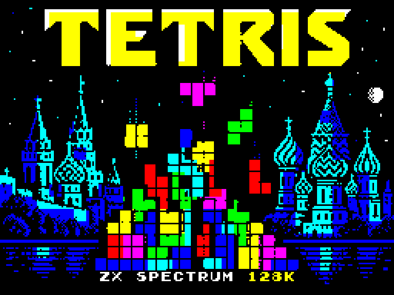

Keep the lines coming.
Continuous play. Clear lines, chase a high score and keep up as the speed increases.
ZX SPECTRUM 128K
A pocket classic.
In full Spectrum colour.
Game Boy Tetris, recreated for the Spectrum with coloured pieces, AY music and that familiar one-more-game feeling.
Free to play · One player · Keyboard + Kempston

01 / PLAY
Click Play, then press Enter to start.
Sound begins with your interaction.
Real Spectrum emulation. Real AY sound.
Keyboard recommended. Touch controls are available below.
02 / WATCH
Loading artwork, menu and gameplay.
43 seconds, with AY audio.
03 / HOW TO PLAY
Kempston: left/right to move, down to drop, fire to rotate. Press K in the menu to toggle.
Continuous play. Clear lines, chase a high score and keep up as the speed increases.
Clear 25 lines at your chosen starting speed and pile height. Finish the challenge to see your results.
Press L in the menu for heart difficulty: falling speed increases by ten levels, capped at level 20. The heart is a challenge, not an extra life.
Menu: O/P selects level · B switches mode · H selects B-Type height · T chooses music · R opens records.
04 / BEHIND THE BLOCKS
An unofficial native Z80 recreation, informed by the disassembly of Game Boy Tetris v1.1. Graphics, music and game systems have been adapted to the Spectrum 128K.
Created by MmmPT with assistance from OpenAI's ChatGPT for code, graphics conversion, AY audio, debugging, testing and documentation. Tested in emulation.